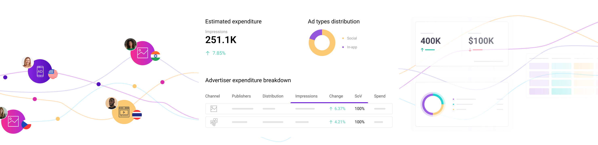

Don’t settle for outdated research technology when you can tap on the most complete view of the digital consumer. BIScience sets a new bar and provides the deepest digital intelligence to market research companies, brands, publishers, retailers, and investment professionals
